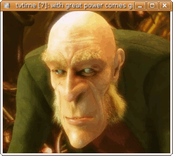

tvtime
Archivierte Anleitung
Dieser Artikel wurde archiviert, da er - oder Teile daraus - nur noch unter einer älteren Ubuntu-Version nutzbar ist. Diese Anleitung wird vom Wiki-Team weder auf Richtigkeit überprüft noch anderweitig gepflegt. Zusätzlich wurde der Artikel für weitere Änderungen gesperrt.
Zum Verständnis dieses Artikels sind folgende Seiten hilfreich:
tvtime  ist ein Fernsehanzeigeprogramm für Linux (analoger TV Empfang), wobei das Hauptziel bei der Entwicklung auf die Bildqualität gelegt wird. Es kommt mit zahlreichen Algorithmen zur Optimierung des Bildes und ist auch sehr gut für das Widescreen-Format (16:9) geeignet. Das Programm kann schnell mit Hotkeys oder einem OSD-Menü bedient und konfiguriert werden. Da es auf Menüs, Icons usw. verzichtet, passt es sich gut in jede Desktopumgebung ein.
ist ein Fernsehanzeigeprogramm für Linux (analoger TV Empfang), wobei das Hauptziel bei der Entwicklung auf die Bildqualität gelegt wird. Es kommt mit zahlreichen Algorithmen zur Optimierung des Bildes und ist auch sehr gut für das Widescreen-Format (16:9) geeignet. Das Programm kann schnell mit Hotkeys oder einem OSD-Menü bedient und konfiguriert werden. Da es auf Menüs, Icons usw. verzichtet, passt es sich gut in jede Desktopumgebung ein.
Installation¶
tvtime kann aus der Paketverwaltung heraus installiert [1] werden.
tvtime (universe)
 mit apturl
mit apturl
Paketliste zum Kopieren:
sudo apt-get install tvtime
sudo aptitude install tvtime
Anschließen kann man tvtime über "Anwendungen -> Multimedia -> tvtime Television Viewer" starten.

Konfiguration¶
tvtime selber hat keine herkömmlichen Dialoge oder Menüs. Über einen Klick mit der rechten Maustaste in das TV-Bild kann man ein On-Screen-Display einblenden lassen, in dem sich die TV-Sender und vieles mehr einstellen lassen.
Kanäle¶
Nach dem ersten Start kennt tvtime natürlich noch keine TV-Sender. Diese müssen wie bei einem herkömmlichen Fernseher erst eingestellt werden. Im Menü unter "Senderplätze einstellen" findet man dazu die nötigen Funktionen. Mittels "Kanalsuche starten" kann man tvtime nach allen Sendern suchen lassen. Über "Auf neuen Senderplatz verschieben" kann man diese Liste sortieren und dann über "In Liste aktiver Programme" einzelne Sendern, die gefunden wurden, aber nicht interessant sind, aus der Liste ausnehmen.
Programmführer (EPG)¶
Es ist möglich, mithilfe des nexTView Standards und dem xmltv-Format Programmdaten in tvtime einzuspeisen, ohne dass ein Internetanschluss nötig ist. Dafür speichert man die Datei unter ~/.nxtvdb/listings.xml ab. Als nächstes muss tvtime mitgeteilt bekommen, wo die EPG-Daten zu finden sind. Dazu gibt es das Programm tvtime-configure, dieses bearbeitet automatisch die tvtime-Konfigurationsdatei [3]:
tvtime-configure --xmltv=~/.nxtvdb/listings.xml
Nun müssen in einem Editor [4] die Dateien listings.xml aus dem Ordner ~/.nxtvdb und stationlist.xml aus ~/.tvtime geöffnet werden. Wichtig ist erst einmal die listings.xml. Aus dieser müssen die Sendernamen ausgelesen werden und anschließend in der stationlist.xml von Hand angepasst werden. Dies ist sicherlich der mühsamste Abschnitt dieser Anleitung.
In der listings.xml findet man folgende Zeilen:
<channel id="CNI0DC1"> <display-name>ARD</display-name> </channel> <channel id="CNI0DCB"> <display-name>BR3</display-name> </channel>
Die Sender heißen also "ARD" oder "BR3" usw. tvtime liest aus der Datei stationlist.xml die Sendernamen aus, damit nun die EPG-Daten zum passenden Sender finden, müssen die Sendernamen aus dem EPG und aus tvtime übereinstimmen. Um dies zu tun, ist es nützlich, tvtime zu starten und zu sehen, an welcher Position sich welcher Sender befindet. Findet man als z.b. ARD auf Position 7, so wird aus der Zeile:
<station name="7" active="1" position="7" band="VHF E2-E12" channel="E7" finetune="0" norm="PAL"/>
nach der Änderung
<station name="ARD" active="1" position="7" band="VHF E2-E12" channel="E7" finetune="0" norm="PAL"/>
Achtung!
Man muss nur den Namen ändern, alle anderen Werte sollten nicht angetastet werden!
Jetzt kann man tvtime starten und schon mal in den Genuss eines elektronischen Programmführers kommen. Die Daten sollten für alle Sender (für die auch EPG-Daten existieren) angezeigt werden. Immer, wenn man den Sender wechselt, wird angezeigt, wie der Sender heißt, wie spät es gerade ist, was gerade läuft, von wann bis wann die aktuelle Sendung geht und was als nächstes auf diesem Sender kommt. Taucht in den rechten unteren Ecke ein "i" auf (siehe Screenshot), so heißt das, es gibt weitere Informationen zur Sendung. Diese Information bekommt man dann angezeigt, wenn man mit der linken Maustaste in das Fernsehbild klickt.
Problembehebung¶
Es besteht die Möglichkeit, dass sich tvtime beim Starten aus dem Menü nicht öffnet. In diesem Fall kann man versuchen, das Programm stattdessen in einem Terminalfenster [2] zu starten, um ggf. eine Fehlermeldung zu erhalten:
tvtime
overlay support¶
xvoutput: No XVIDEO port found which supports YUY2 images. *** tvtime requires hardware YUY2 overlay support from your video card *** driver. If you are using an older NVIDIA card (TNT2), then *** this capability is only available with their binary drivers. *** For some ATI cards, this feature may be found in the experimental *** GATOS drivers: http://gatos.souceforge.net/ *** If unsure, please check with your distribution to see if your *** X driver supports hardware overlay surfaces.
Dieses Problem lässt sich jedoch relativ einfach beheben. Hierzu muss in einem Editor [3] die Konfigurationsdatei /etc/X11/xorg.conf bearbeitet werden. Bevor man dies tut, sollte man sich jedoch für alle Fälle eine Sicherung der alten xorg.conf anlegen. In der Datei sucht man die Section "Device". Hier fügt man eine weitere Zeile ein:
Option "VideoOverlay" "on"
Anschließend startet man den XServer mit Alt + Druck + K neu. Nun sollte sich tvtime problemlos ausführen lassen.
Line-In beim Beenden stummschalten¶
Manchmal läuft der Audiokanal der TV-Karte einfach weiter, obwohl tvtime schon beendet wurde. Hierzu die Datei /etc/tvtime/tvtime.xml mit Root-Rechten öffnen [3] und entsprechenden Wert von 0 auf 1 ändern.
<option name="MuteOnExit" value="1"/>
Programm stürzt beim Start ab¶
Sollte man an seinem System eine externe Media Device (bspw. eine Webcam) angeschlossen haben, kann tvtime beim Programmstart abstürzen. Ursache dafür ist ein bekannter Bug , der sich durch die nachträgliche Installation einer gepatchten Version beheben lässt.
Hinweis!
Fremdpakete können das System gefährden.
tvtime spielt keinen Ton ab¶
Mit manchen TV-Karten (vor allem mit saa7134 Modul) ist tvtime nicht dazu zu bewegen Sound auszugeben. Eventuell ist der ALSA-Kanal "Video" deaktiviert oder heruntergeregelt. Der Kanal "Video" kann wie unter Alsamixer beschrieben aktiviert werden.
Alternativ kann mit gst-launch aus den gstreamer-tools der Ton der TV-Karte eingeschaltet werden.
gstreamer-tools (main)
mit apturl
Paketliste zum Kopieren:
sudo apt-get install gstreamer-tools
sudo aptitude install gstreamer-tools
Dann ein Startskript z.B. tvtime.sh für tvtime erstellen, dieses ausführbar machen[4] und den Starter im Menü auf dieses Skript zeigen lassen. Das Skript hat folgenden Inhalt:
1 2 3 4 5 | #!/bin/bash gst-launch alsasrc device=hw:2,0 ! audio/x-raw-int,rate=32000 ! volume volume=5 ! autoaudiosink & tvtime killall gst-launch-0.10 exit |
device=hw:2,0 entsprechend der Nummer der verwendeten TV-Karte anpassen. Die Nummer kann mit dem Befehl
cat /proc/asound/cards
in Erfahrung gebracht werden.
Deaktiviertes Line-In¶
Ab Ubuntu 11.10 ist die Line-In Wiedergabe von Pulse deaktiviert. Um diese dauerhaft zu aktivieren reicht der Befehl
sudo sh -c "echo load-module module-loopback >> /etc/pulse/default.pa"

- Erstellt mit Inyoka
-
 2004 – 2017 ubuntuusers.de • Einige Rechte vorbehalten
2004 – 2017 ubuntuusers.de • Einige Rechte vorbehalten
Lizenz • Kontakt • Datenschutz • Impressum • Serverstatus -
Serverhousing gespendet von